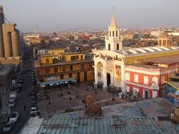
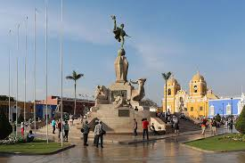
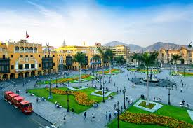
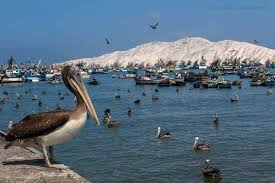

Landmarks
-
Name: Machu Picchu - Death Toll: 53429

-
Name: Nazca Lines - Death Toll: 643

-
Name: Cusco Historic Center - Death Toll: 791328

-
Name: Lake Titicaca - Death Toll: 1

Famous People
-
Name: Mario Vargas Llosa - Fact: A famous Afro-Peruvian singer, composer, and politician.

-
Name: Susana Baca - Fact: A renowned novelist and the recipient of the 2010 Nobel Prize in Literature.

-
Name: Paolo Guerrero - Fact: A chef and ambassador of Peruvian cuisine, known worldwide for popularizing dishes such as ceviche.

-
Name: Gaston Acurio - Fact: A prominent footballer who has been a key figure in the Peru national team.

Cities
-
Name: Callao - Danger Rate: 75.4

-
Name: Trujillo - Danger Rate: 5.0

-
Name: Lima - Danger Rate: 82.2

-
Name: Chimbote - Danger Rate: 16.9
